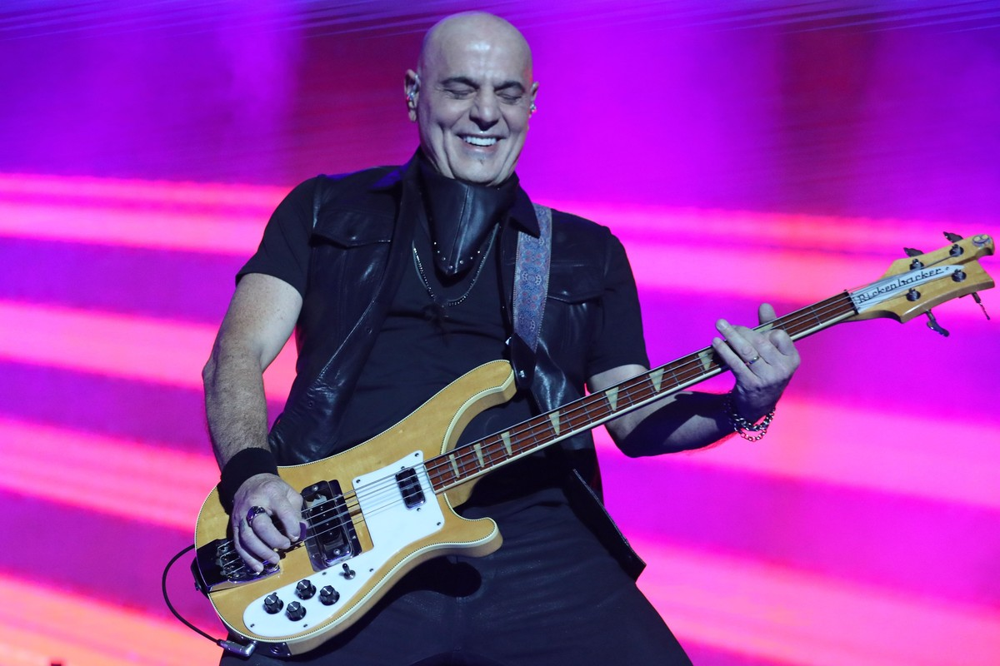

Explora algunos álbumes destacados de Soda Stereo:
Soda Stereo (Álbum debut - 1984)
Soda Stereo es el álbum debut de la banda de rock en español Soda Stereo, lanzado el 27 de agosto de 1984.
Producido por Federico Moura, presenta un estilo humorístico e irónico, influenciado por bandas británicas de
new wave y ska como The Police, The Specials y Madness.
Este disco marcó el inicio de una nueva etapa en la música argentina de los años '80.
Me Verás Volver (Hits & Más - 2007)
Este álbum recopilatorio fue editado en 2007 como antesala a la gira "Me Verás Volver".
Incluye 18 canciones remasterizadas y material exclusivo online, con grabaciones en vivo, videos históricos y
fotografías.
Representa la despedida y el regreso triunfal de Soda Stereo en América Latina.
Comfort y Música Para Volar (1996)
Este álbum en vivo fue lanzado en 1996 y grabado en las sesiones de MTV en Miami.
La primera edición incluyó 7 canciones en vivo y 4 en estudio, mientras que la reedición de 2007 reunió las 13
canciones originales.
Es considerado uno de los discos más emblemáticos del rock latino.
Videos
Galería de videos oficiales.
Galería
Imágenes y fotos destacadas.
Shows
Próximas presentaciones y eventos.
Contacto
Formulario o información de contacto.
La banda de rock que conquistó el mundo latino
Explora el mundo Soda Stereo: Historia, Canciones y Legado Musical
Inmortal
Biografía
Soda Stereo fue una banda de rock argentina formada en 1982
originalmente por el cantante y guitarrista Gustavo Cerati, el bajista
Zeta Bosio y el baterista Charly Alberti. Es considerada por un sector
de la crítica especializada como la banda más importante, popular e
influyente del rock en español y una leyenda de la música
latinoamericana. Fueron el primer grupo de habla hispana en conseguir
un éxito masivo en Latinoamérica y tuvieron un papel muy importante en
el desarrollo y la difusión del rock latinoamericano y el rock en
español durante los años 80 y los 90. Durante su carrera, fueron
vanguardistas y marcaron tendencia en Latinoamérica, en la que
protagonizaron diversos géneros como la música divertida de sus
inicios, la new wave, el dark wave, el hard rock, el rock alternativo
y el rock electrónico de sus finales. Soda Stereo ha encabezado las
listas de todos los tiempos en el mundo, donde se establecieron varios
récords de ventas de discos y asistencias a conciertos. Hasta 2007 se
cifraban las ventas de la banda en más de siete millones de copias
vendidas de sus álbumes; sin embargo, estimaciones más recientes de
2018 discrepan atribuyéndoles más de veinte millones de copias
vendidas en todo el mundo.
Gustavo Cerati: La Voz y el Alma
Gustavo Adrián Cerati (Buenos Aires, 11 de agosto de 1959-Buenos
Aires, 4 de septiembre de 2014) fue un músico, cantautor y productor
discográfico argentino que obtuvo reconocimiento por haber sido el
líder, vocalista, compositor y guitarrista de la banda de rock Soda
Stereo. La prensa especializada y otros músicos lo consideran como uno
de los artistas más influyentes del rock latinoamericano. Influenciado
por las bandas británicas The Beatles y The Police, Cerati integró
diversas agrupaciones desde su adolescencia y en 1982 fundó la banda
de rock latino Soda Stereo. Líder y principal compositor del conjunto,
a partir de Signos (1986) su forma de hacer canciones comenzó a
madurar, y su consolidación la alcanzó a comienzos de los años 1990
con Canción animal, en el que volvía a las raíces del rock argentino
de los años 1970. Paralelo a su carrera con el grupo, en 1992 publicó
a dúo con Daniel Melero el álbum Colores santos, considerado uno de
los primeros en Sudamérica en incluir música electrónica, y al año
siguiente, el primero como solista, Amor amarillo. Su gusto por la
electrónica lo llevó a incorporarla a sus últimos trabajos con Soda
Stereo. Después de la separación de la banda, lanzó Bocanada (1999) y
Siempre es hoy (2002), donde mostró más su interés por el género, que
manifestó libremente en sus proyectos alternos Plan V y Ocio, con la
edición de álbumes y presentaciones que le dieron mayor difusión a
este tipo de música.
Charly Alberti: El Ritmo Vanguardista
Nació el 27 de marzo de 1963 en la ciudad de Buenos Aires, hijo de
Dolly Gigliotti y Tito Alberti. Desde muy pequeño sintió gran
fascinación por la naturaleza y los animales, especialmente los peces.
Se dedicó cuidadosamente al criado de diversas especies y esta pasión
le permitió disfrutar de su personalidad pensante y solitaria.
Aprovechaba las horas de siesta para armar modelos a escala de aviones
de combate, un hobbie que encajaba cabalmente con su espíritu
perfeccionista
Zeta Bosio: El Soporte Armónico

Inició su contacto con la música a los 11 años, edad en la que escuchó
por primera vez The Beatles, decidiéndose a aprender a tocar el bajo
encima de los discos. Mientras estaba en el colegio formó dos bandas,
Agua y La Banda de San Francisco. Luego se internó en la marina y con
su primer salario se compró un bajo en Puerto Rico. En la armada
integró la orquesta y perfeccionó sus conocimientos musicales